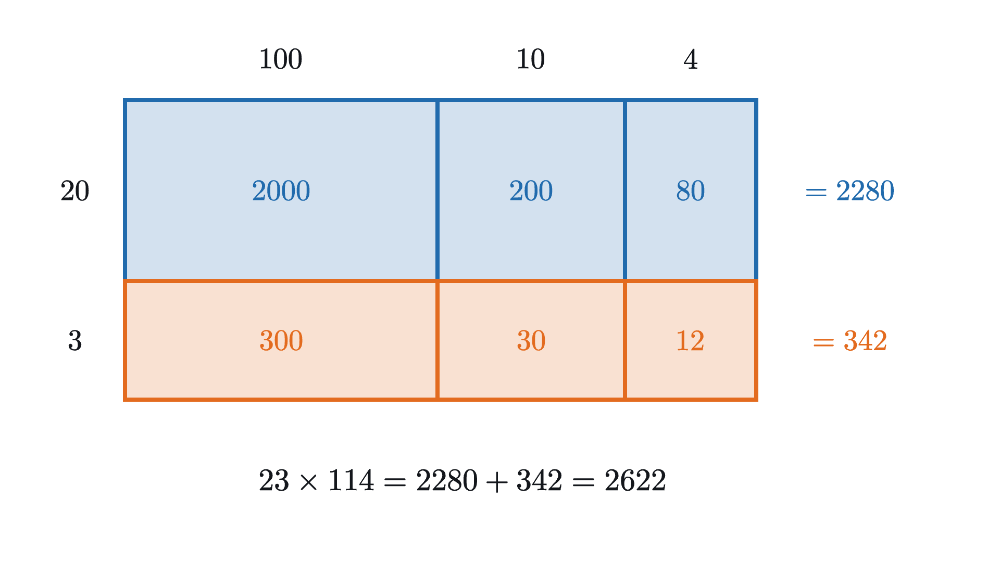
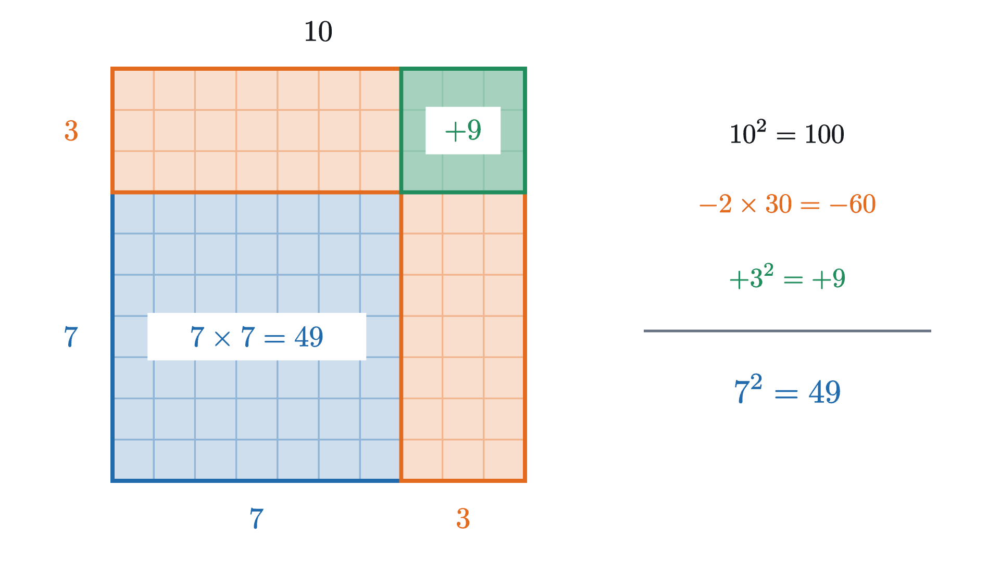

The distributive law as a picture: FOIL and (a+b)²
Cutting a rectangle into pieces explains FOIL, why (a+b)² has a middle term 2ab, and why (a+b)(a−b) = a² − b². Each identity is then proved.
A student asked to square 13 reasons as follows: 13 is $10 + 3$, the square of 10 is 100, the square of 3 is 9, so the answer is 109. The method feels sound, because it is exactly how the same student would double 13 (double the 10, double the 3, add). But $13 \times 13$ is 169. Sixty has gone missing, and the student’s rule gives no hint about where.
The answer to “where did the 60 go” is in the animation above, and by the end of this lesson you will be able to read it off at a glance. Getting there requires only one law of arithmetic, the one that tells you how multiplication and addition interact. We will draw that law as a rectangle, and then use the same drawing to explain three results that are usually memorized separately: the FOIL rule for multiplying two brackets, the formula for $(a+b)^2$, and the difference of squares.
One rectangle, cut in two
Start with a multiplication that is slightly too big to know by heart, $4 \times 13$. Most people who do it in their head split the 13: four tens are 40, four threes are 12, and together that makes 52. The figure shows why splitting is allowed. A rectangle that is 4 cells tall and 13 cells wide contains $4 \times 13$ cells. Cut it with a vertical line after the tenth column. No cell is created or destroyed by the cut, so the two pieces together contain the same number of cells as before.
Written as an equation, the cut says
Nothing in the picture depended on the particular numbers. A rectangle with height $a$ and width $b + c$ can always be cut into one piece of width $b$ and one of width $c$, and the areas of the pieces add up to the area of the whole.
Pause and try
Use one cut to work out $7 \times 23$ in your head. Say which rectangle you are cutting and where.
Show answerHide answer
Take a rectangle 7 tall and 23 wide and cut it after the twentieth column. The pieces are 7 by 20 and 7 by 3, with areas 140 and 21, so $7 \times 23 = 161$.
The distributive law, stated exactly
The fact we have been using has a name.
It is worth being clear about what the rectangle does and does not establish, because the law is stated for all real numbers and a rectangle cannot have a side of length $-3$.
When $a$, $b$ and $c$ are positive whole numbers, the picture is a complete proof: a grid with $a$ rows and $b + c$ columns is literally made of a grid with $a$ rows and $b$ columns next to one with $a$ rows and $c$ columns, and counting cells gives the law. When they are positive lengths that are not whole numbers, the picture says that area is unchanged by cutting, which is part of what we mean by area. For negative numbers no picture is available, and the law is instead one of the basic rules that negative numbers are required to obey. The previous lesson, why a negative times a negative is positive, showed that requiring it forces the sign rules, including $a \times (-b) = -(ab)$ and $(-a)(-b) = ab$, which we will use below.
So from here on we treat the distributive law as given for all real numbers. Everything else below is proved from it, together with the fact that the order of a product does not matter ($ab = ba$). The pictures will show why each result is true for positive lengths, and a short calculation will then show that it is true for all numbers.
One immediate consequence is that the sum can also sit on the left. Since $(b + c)a = a(b + c)$ by swapping the order, we get
Two cuts: the product of two sums
Now take a product where both numbers are awkward, $13 \times 12$. One cut is not enough to make it easy, since $13 \times 12 = 10 \times 12 + 3 \times 12$ still leaves two products to work out. But nothing stops us from cutting the other way as well.
Pause and try
Before stepping through the figure, split $13$ as $10 + 3$ and $12$ as $10 + 2$. Into how many pieces do the two cuts divide the rectangle, and what are their areas? Add them to get $13 \times 12$.
Show answerHide answer
There are four pieces: $10 \times 10 = 100$, $10 \times 2 = 20$, $3 \times 10 = 30$ and $3 \times 2 = 6$. Their total is $156$, so $13 \times 12 = 156$.
Each of the four pieces is one part of 13 multiplied by one part of 12, and every such pairing appears exactly once. In letters, a rectangle with sides $a + b$ and $c + d$ is cut into pieces of area $ac$, $ad$, $bc$ and $bd$.
The proof follows the two cuts exactly, but it never mentions lengths, so it holds whether the numbers are positive, negative or zero.
Many people learn this theorem under the name FOIL, which stands for First, Outer, Inner, Last: multiply the first terms of the two brackets ($ac$), the outer terms ($ad$), the inner terms ($bc$) and the last terms ($bd$). The word is a way of making sure all four pieces of the rectangle are accounted for. The same idea works when the brackets have more terms. If one side is cut into three parts and the other into two, there are six pieces, and in general every term of the first bracket multiplies every term of the second.

This is what long multiplication does. Each line of a long multiplication is one row of the box, and the place-value columns keep track of the cuts.
The square of a sum
We can now return to the student who squared 13 and got 109. Squaring 13 means finding the area of a 13 by 13 square. Splitting 13 as $10 + 3$ cuts both sides of the square, so by the theorem there should be four pieces. The student’s answer, $10^2 + 3^2$, accounts for two of them.
Pause and try
Draw a 13 by 13 square and cut each side into 10 and 3. Shade the $10 \times 10$ and $3 \times 3$ pieces. What are the shapes and areas of the parts left unshaded?
Show answerHide answer
Two rectangles are left unshaded, each 10 by 3, so each has area 30. Together they hold the 60 cells that $100 + 9$ leaves out.
So the missing 60 is two strips, each with one side from the 10 and one side from the 3. The student’s rule works for doubling because doubling stretches a length, and each part of the length can be stretched separately. Squaring builds an area, and an area built on a side of $10 + 3$ contains regions where the 10 part of one side meets the 3 part of the other.
In the picture, $a^2$ and $b^2$ are the two squares and $2ab$ is the pair of strips. The term $2ab$ is called the cross term, because each strip comes from crossing a part of one side with the other part of the other side.
The next figure keeps $a$ at 10 and lets $b$ vary, so you can watch how much the wrong formula $a^2 + b^2$ misses. The gap is always the two strips, $2ab$.
When the two expressions do agree
The gap between $(a + b)^2$ and $a^2 + b^2$ is $2ab$, so the two are equal exactly when $2ab = 0$. A product of numbers is zero only when one of the factors is zero, so this happens only when $a = 0$ or $b = 0$. In the figure, that is the case where one part of the side has no length and the strips have no width. For every other pair of numbers, $(a + b)^2$ and $a^2 + b^2$ are different, and they can differ in either direction: if $a$ and $b$ have opposite signs then $2ab$ is negative and $(a + b)^2$ is the smaller of the two. For example $(5 + (-3))^2 = 4$, while $5^2 + (-3)^2 = 34$.
The square of a difference
Because the theorem holds for all real numbers, we may replace $b$ by $-b$. Then $a + (-b) = a - b$, the cross term becomes $2a(-b) = -2ab$, and the last term becomes $(-b)(-b) = b^2$, by the sign rule $(-x)(-y) = xy$. This gives a companion formula with no further proof needed:
For positive lengths with $a > b$ there is a picture of this as well. Start with a square of side 10 and remove a strip of width 3 from the right and a strip of height 3 from the top. A square of side 7 remains. Each full strip is 10 by 3, but the two overlap in a 3 by 3 corner, which has therefore been removed twice and must be added back once.

The difference of two squares
The third identity starts from a different kind of question. Take two squares and subtract the smaller from the larger. For instance $7^2 - 3^2 = 49 - 9 = 40$. Is there anything to notice about the answer?
Pause and try
Compute $5^2 - 2^2$, $7^2 - 3^2$ and $9^2 - 4^2$. Then compute $(5+2)(5-2)$, $(7+3)(7-3)$ and $(9+4)(9-4)$. What do you find?
Show answerHide answer
The differences of squares are $25 - 4 = 21$, $49 - 9 = 40$ and $81 - 16 = 65$. The products are $7 \times 3 = 21$, $10 \times 4 = 40$ and $13 \times 5 = 65$. In each case the difference of the squares equals the sum of the two numbers times their difference.
Three matching cases suggest a rule and do not prove one. The figure shows why the match is not a coincidence, by taking the 40 cells of $7^2 - 3^2$ and physically rearranging them into a 10 by 4 rectangle.
The L shape has two arms, and both arms have the same thickness, $7 - 3 = 4$, because that is how much of each side is left after the corner is taken out. Equal thickness is what allows one arm to be turned and laid end to end with the other. The combined length is $7 + 3 = 10$: the long arm contributes 7 and the short arm, which had length 3 along the removed corner, contributes 3.
With letters, the L shape left when a square of side $b$ is cut from the corner of a square of side $a$ has arms of thickness $a - b$, and it rearranges into a rectangle of length $a + b$ and height $a - b$.
The rearrangement only makes sense when $a > b > 0$, since otherwise there is no corner to remove. The algebra has no such restriction. In the proof, the two cross terms have opposite signs and cancel, which is the algebraic counterpart of the L shape closing up into a rectangle with nothing left over.
Mental arithmetic with the three identities
These identities are practical. Each one converts a multiplication near a round number into something you can do without paper.
For the square of a number near a multiple of ten, use the square of a sum or of a difference. We have seen $13^2 = 100 + 60 + 9 = 169$. In the same way $99^2 = (100 - 1)^2 = 10000 - 200 + 1 = 9801$.
For a product of two numbers that are equally far from a round number, use the difference of squares. The numbers 47 and 53 are each 3 away from 50, so
Notice what this says: the product $47 \times 53$ falls short of $50 \times 50$ by exactly $3^2$. Moving two equal factors apart by the same amount in opposite directions always lowers the product, by the square of that amount.
Worked examples
Where the pattern does not extend
The distributive law says that multiplication can be shared out over a sum. It is tempting to assume that every operation can be shared out in the same way, and most cannot. Squaring cannot, as we have seen. Square roots cannot: $\sqrt{9 + 16} = \sqrt{25} = 5$, while $\sqrt{9} + \sqrt{16} = 7$. Division by a sum cannot: $12 \div (2 + 4) = 2$, while $12 \div 2 + 12 \div 4 = 9$.
Division of a sum by a nonzero number $a$ does work, since $(b + c) \div a$ is $(b + c)$ multiplied by $\frac{1}{a}$, and the distributive law applies to that multiplication: $(8 + 4) \div 2 = 4 + 2$. And the roles of the two operations cannot be exchanged: $2 + (3 \times 4) = 14$, while $(2 + 3) \times (2 + 4) = 30$. So whenever you are about to share an operation out over a sum, the safe question to ask is whether the operation is a multiplication by a fixed number. If it is, the law applies. If it is anything else, test with numbers first.
Common mistakes
Stepping back
The difficulty at the start was that a rule which is correct for doubling was being applied to squaring. What resolved it was drawing the product as an area, so that every piece of the product had a place where it could be seen and counted. The cross terms were not visible in the student’s calculation and were impossible to miss in the square.
The reusable idea is that a product of sums is a sum of all the pairwise products, and that the pieces can be organized by a rectangle. That one idea produced the box method for long multiplication, the square of a sum and of a difference, and the difference of squares. The pictures explain the identities for positive lengths, and the proofs from the distributive law extend them to all real numbers.
The next lesson, completing the square, runs the square-of-a-sum picture in reverse. Given $x^2$ and two strips, it asks which corner is needed to finish the square, and the answer leads to the quadratic formula.
Check yourself
Which expression is equal to $(x + 4)^2$ for every value of $x$?
Problems
Problem 1
Use the distributive law to compute each product mentally: (a) $6 \times 104$, (b) $8 \times 99$.
Show solutionHide solution
(a) Write $104 = 100 + 4$. Then $6 \times 104 = 6 \times 100 + 6 \times 4 = 600 + 24 = 624$.
(b) Write $99 = 100 - 1 = 100 + (-1)$. Then $8 \times 99 = 8 \times 100 + 8 \times (-1) = 800 - 8 = 792$.
Problem 2
Expand $(x + 2)(x + 7)$, and check your answer at $x = 1$.
Show solutionHide solution
Multiply each term of the first bracket by each term of the second:
Check at $x = 1$: the original is $3 \times 8 = 24$, and the expansion is $1 + 9 + 14 = 24$.
Problem 3
Compute $21^2$ and $19^2$ using the square of a sum and the square of a difference.
Show solutionHide solution
$21^2 = (20 + 1)^2 = 20^2 + 2 \times 20 \times 1 + 1^2 = 400 + 40 + 1 = 441$.
$19^2 = (20 - 1)^2 = 20^2 - 2 \times 20 \times 1 + 1^2 = 400 - 40 + 1 = 361$.
As a check, the two answers differ by $441 - 361 = 80$, and by the difference of squares $21^2 - 19^2 = (21 + 19)(21 - 19) = 40 \times 2 = 80$.
Problem 4
Compute $98 \times 102$ and $35 \times 25$ using the difference of two squares.
Show solutionHide solution
Both products have factors equally spaced around a convenient number.
$98 \times 102 = (100 - 2)(100 + 2) = 100^2 - 2^2 = 10000 - 4 = 9996$.
$35 \times 25 = (30 + 5)(30 - 5) = 30^2 - 5^2 = 900 - 25 = 875$.
Problem 5
A square garden has side $s$ meters. Each side is lengthened by 1 meter. (a) By how much does the area increase? Give a formula and explain it with a picture of the new garden. (b) Use your formula to get $11^2$ from $10^2$, and $12^2$ from $11^2$.
Show solutionHide solution
(a) The new area is $(s + 1)^2 = s^2 + 2s + 1$, so the increase is $2s + 1$ square meters. In the picture, the new square consists of the old $s$ by $s$ square, two strips that are $s$ by 1, and a 1 by 1 corner. The strips contribute $2s$ and the corner contributes 1.
(b) With $s = 10$ the increase is 21, so $11^2 = 100 + 21 = 121$. With $s = 11$ the increase is 23, so $12^2 = 121 + 23 = 144$. Consecutive squares differ by consecutive odd numbers.
Problem 6
For which values of $x$ is the equation $(x + 3)^2 = x^2 + 9$ true?
Show solutionHide solution
Expand the left side: $(x + 3)^2 = x^2 + 6x + 9$. The equation becomes
Subtracting $x^2 + 9$ from both sides leaves $6x = 0$, so $x = 0$.
The equation is true only when $x = 0$. This agrees with the general statement proved above: $(a + b)^2 = a^2 + b^2$ only when $a = 0$ or $b = 0$, and here $b = 3$ is not zero. A student who “simplifies” $(x + 3)^2$ to $x^2 + 9$ is writing something that is false for every value of $x$ except one.
Problem 7
Find a formula for $(a + b + c)^2$ by drawing a square whose sides are each cut into three parts. Check your formula with $a = 1$, $b = 2$, $c = 3$.
Show solutionHide solution
Cutting each side into parts $a$, $b$, $c$ divides the square into nine pieces, one for each pairing of a part of the horizontal side with a part of the vertical side. Three of them are the squares $a^2$, $b^2$, $c^2$ on the diagonal. The other six come in equal pairs: two of area $ab$, two of area $ac$ and two of area $bc$. So
The same result follows from the distributive law by treating $(a + b)$ as one number: $\bigl((a+b) + c\bigr)^2 = (a+b)^2 + 2(a+b)c + c^2$, and expanding.
Check: $(1 + 2 + 3)^2 = 36$, and $1 + 4 + 9 + 4 + 6 + 12 = 36$.
Problem 8
A rectangle has perimeter 40, so its two side lengths add to 20. Write the sides as $10 + d$ and $10 - d$ for some number $d$ with $0 \le d < 10$. Show that the area is largest when the rectangle is a square, and say by how much the area of a 13 by 7 rectangle falls short of the square’s.
Show solutionHide solution
The area is $(10 + d)(10 - d) = 100 - d^2$ by the difference of two squares. Since $d^2 \ge 0$, with equality only when $d = 0$, the area is at most 100 and equals 100 only when $d = 0$. In that case both sides are 10 and the rectangle is a square.
A 13 by 7 rectangle has $d = 3$, so its area is $100 - 9 = 91$, which falls short of the square’s area by $3^2 = 9$. Indeed $13 \times 7 = 91$.
Problem 9
(a) Show that $(a + b)^2 - (a - b)^2 = 4ab$ for all real numbers $a$ and $b$. (b) Check it with $a = 7$, $b = 3$. (c) Deduce that $(a + b)^2 \ge 4ab$ for all real numbers, and say when equality holds.
Show solutionHide solution
(a) Expand both squares:
Alternatively, use the difference of two squares with $A = a + b$ and $B = a - b$: $(A + B)(A - B) = (2a)(2b) = 4ab$.
(b) $(7 + 3)^2 - (7 - 3)^2 = 100 - 16 = 84$, and $4 \times 7 \times 3 = 84$.
(c) Rearranging part (a), $(a + b)^2 = 4ab + (a - b)^2$. A square of a real number is never negative, so $(a - b)^2 \ge 0$ and therefore $(a + b)^2 \ge 4ab$. Equality holds exactly when $(a - b)^2 = 0$, that is, when $a = b$. For positive lengths there is a picture: four $a$ by $b$ rectangles can be arranged around the inside edge of a square of side $a + b$, leaving a square hole in the middle whose side is the difference between $a$ and $b$.